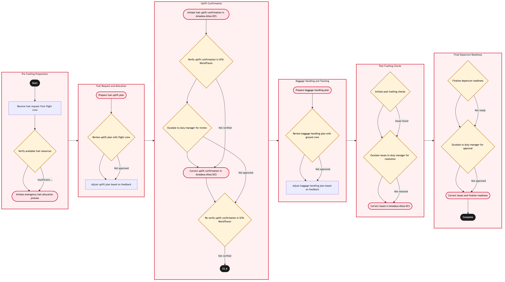

Updated 2026-08-21
Fuelling Coordination and Uplift Confirmation
Process flow
Click to zoom

Process steps
▼
Phase 1 — Pre-Fuelling Preparation
3 steps
| Step | Activity | Role | System | Input | Output | KPI | Dec | Exc | Pain point |
|---|---|---|---|---|---|---|---|---|---|
| 1.1 | Receive fuel request from flight crew | YYZ Operations Control Duty Manager | Amadeus Altea DCSA | Fuel request form | Acknowledged fuel request | Response time < 5 minutes | N | N | Delayed fuel requests can cause significant delays. |
| 1.2 | Verify available fuel resources | YYZ Fuel Operations Specialist | CUPPSC | Fuel inventory data | Resource availability report | Accuracy of resource data > 99% | Y | N | Inaccurate fuel resource data can lead to overbooking. |
| 1.3 | Initiate emergency fuel allocation process | YYZ Fuel Operations Specialist | Amadeus Altea DCSA | Emergency fuel request | Emergency fuel allocation | Allocation time < 10 minutes | N | Y | Emergency allocation can be resource-intensive. |
▼
Phase 2 — Fuel Request and Allocation
3 steps
| Step | Activity | Role | System | Input | Output | KPI | Dec | Exc | Pain point |
|---|---|---|---|---|---|---|---|---|---|
| 2.1 | Prepare fuel uplift plan | YYZ Fuel Operations Specialist | Amadeus Altea DCSA | Flight details and fuelling requirements | Uplift plan | Plan accuracy > 95% | N | Y | Incorrect plans can lead to over-fuelling or under-fuelling. |
| 2.2 | Review uplift plan with flight crew | YYZ Operations Control Duty Manager | Amadeus Altea DCSA | Uplift plan | Approved uplift plan | Approval time < 3 minutes | Y | N | Miscommunication between operations and flight crew can delay departures. |
| 2.3 | Adjust uplift plan based on feedback | YYZ Fuel Operations Specialist | Amadeus Altea DCSA | Feedback from flight crew | Adjusted uplift plan | Plan adjustment time < 5 minutes | N | N | Multiple adjustments can delay the fuelling process. |
▼
Phase 3 — Uplift Confirmation
5 steps
| Step | Activity | Role | System | Input | Output | KPI | Dec | Exc | Pain point |
|---|---|---|---|---|---|---|---|---|---|
| 3.1 | Initiate fuel uplift confirmation in Amadeus Altea DCS | YYZ Fuel Operations Specialist | Amadeus Altea DCSA | Approved uplift plan | Uplift confirmation record | Confirmation time < 2 minutes | N | Y | System failures can delay confirmation. |
| 3.2 | Verify uplift confirmation in SITA WorldTracer | YYZ Operations Control Duty Manager | SITA WorldTracerB | Uplift confirmation record | Confirmation verification report | Verification accuracy > 98% | Y | N | Incorrect verifications can cause delays. |
| 3.3 | Escalate to duty manager for review | YYZ Operations Control Duty Manager | Amadeus Altea DCSA | Verification report | Review outcome | Review time < 10 minutes | Y | N | Manual reviews can be error-prone. |
| 3.4 | Correct uplift confirmation in Amadeus Altea DCS | YYZ Fuel Operations Specialist | Amadeus Altea DCSA | Review outcome | Corrected uplift record | Correction time < 5 minutes | N | Y | Incorrect corrections can lead to further delays. |
| 3.5 | Re-verify uplift confirmation in SITA WorldTracer | YYZ Operations Control Duty Manager | SITA WorldTracerB | Corrected uplift record | Re-verification report | Re-verification accuracy > 98% | Y | N | Repeated verifications can be time-consuming. |
▼
Phase 4 — Baggage Handling and Tracking
3 steps
| Step | Activity | Role | System | Input | Output | KPI | Dec | Exc | Pain point |
|---|---|---|---|---|---|---|---|---|---|
| 4.1 | Prepare baggage handling plan | YYZ Baggage Handling Specialist | Baggage Reconciliation SystemC | Flight details and passenger manifest | Baggage handling plan | Plan accuracy > 95% | N | Y | Incorrect plans can lead to lost luggage. |
| 4.2 | Review baggage handling plan with ground crew | YYZ Operations Control Duty Manager | Baggage Reconciliation SystemC | Baggage handling plan | Approved baggage plan | Approval time < 3 minutes | Y | N | Miscommunication between operations and ground crew can delay departures. |
| 4.3 | Adjust baggage handling plan based on feedback | YYZ Baggage Handling Specialist | Baggage Reconciliation SystemC | Feedback from ground crew | Adjusted baggage plan | Plan adjustment time < 5 minutes | N | N | Multiple adjustments can delay the baggage handling process. |
▼
Phase 5 — Post-Fuelling Checks
3 steps
| Step | Activity | Role | System | Input | Output | KPI | Dec | Exc | Pain point |
|---|---|---|---|---|---|---|---|---|---|
| 5.1 | Initiate post-fuelling checks | YYZ Operations Control Duty Manager | Amadeus Altea DCSA | Fuel uplift record | Post-fuelling check report | Check time < 10 minutes | Y | N | Delays in post-fuelling checks can cause further delays. |
| 5.2 | Escalate issues to duty manager for resolution | YYZ Operations Control Duty Manager | Amadeus Altea DCSA | Check report | Resolution outcome | Resolution time < 15 minutes | Y | N | Manual resolutions can be error-prone. |
| 5.3 | Correct issues in Amadeus Altea DCS | YYZ Fuel Operations Specialist | Amadeus Altea DCSA | Resolution outcome | Corrected fuel record | Correction time < 5 minutes | N | Y | Incorrect corrections can lead to further delays. |
▼
Phase 6 — Final Departure Readiness
3 steps
| Step | Activity | Role | System | Input | Output | KPI | Dec | Exc | Pain point |
|---|---|---|---|---|---|---|---|---|---|
| 6.1 | Finalize departure readiness | YYZ Operations Control Duty Manager | Amadeus Altea DCSA | Corrected fuel record and post-fuelling report | Departure readiness confirmation | Confirmation time < 2 minutes | Y | N | Delays in finalizing departure readiness can cause significant delays. |
| 6.2 | Escalate to duty manager for approval | YYZ Operations Control Duty Manager | Amadeus Altea DCSA | Departure readiness confirmation | Final approval | Approval time < 5 minutes | Y | N | Manual approvals can be error-prone. |
| 6.3 | Correct issues and finalize readiness | YYZ Operations Control Duty Manager | Amadeus Altea DCSA | Final approval | Final departure readiness confirmation | Correction time < 5 minutes | N | Y | Incorrect corrections can lead to further delays. |
Swim lanes
YYZ Operations Control Duty Manager1.1 2.2 3.2 3.3 3.5 4.2 5.1 5.2 6.1 6.2 6.3
YYZ Fuel Operations Specialist1.2 1.3 2.1 2.3 3.1 3.4 5.3
YYZ Baggage Handling Specialist4.1 4.3
Systems touched
Amadeus Altea DCSACUPPSCSITA WorldTracerBBaggage Reconciliation SystemC
Key performance indicators
- Response time < 5 minutes
- Accuracy of resource data > 99%
- Plan accuracy > 95%
- Approval time < 3 minutes
- Verification accuracy > 98%
Risks and control points
- Inaccurate fuel resource data leading to overbooking
- Incorrect plans causing over-fuelling or under-fuelling
- System failures delaying confirmation
- Miscommunication between operations and flight crew causing delays
- Manual reviews being error-prone
Air Canada Process Wiki — process and systems reference compiled from public sources
for IT Application Management and User Support pre-sales discovery.
Built 2026-08-21. Every system carries an evidence tier: tier C is an industry pattern and tier U is an open
question, and neither should be asserted as fact about Air Canada without confirmation in discovery.
Not affiliated with or endorsed by Air Canada. Air Canada, Aeroplan and Altitude are trademarks of Air Canada.